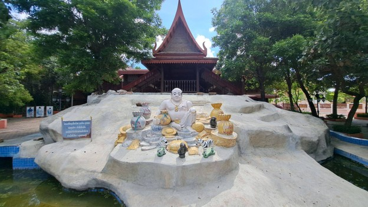

ตลาดน้ำสะพานโค้ง วัดทองประดิษฐ์
ตลาดน้ำสะพานโค้ง วัดทองประดิษฐ์ เป็นที่เที่ยวสุพรรณบุรีที่น่าแวะมาเดินชมวิถีชีวิตและธรรมชาติ มาเดินถ่าย รูปเล่นได้ ที่นี่จะเป็นสะพานไม้เก่ามีรูปร่างเฉพาะ ถ้ามาช่วงพระอาทิตย์ตกที่นี่จะเป็นที่เที่ยวสุพรรณบุรีนอกเมือง ที่สวยงามมาก ๆ รับรองว่าจะเป็นที่เที่ยวสุพรรณบุรีในเมืองที่ยากจะลบออกจากความทรงจำอย่างแน่นอนเวลาเปิดบริการ: ทุกวัน เวลา 09:00 - 18:00 น.
